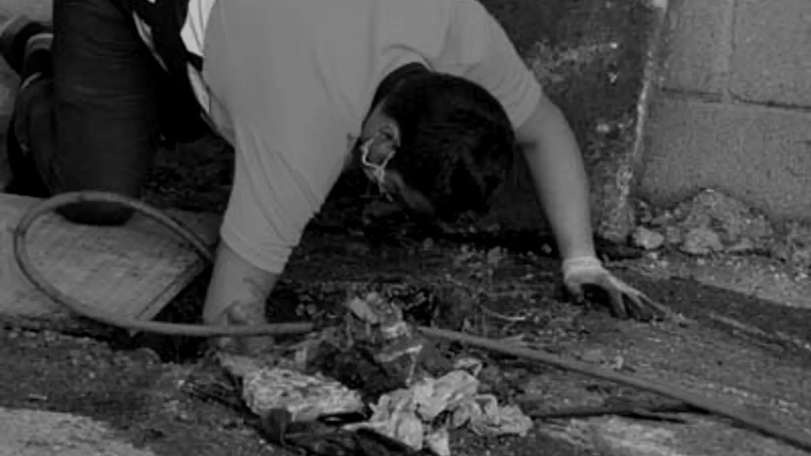
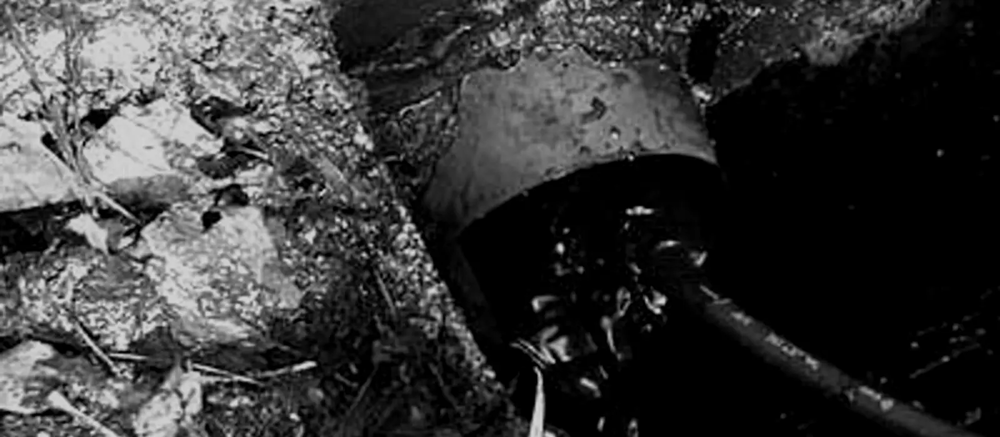
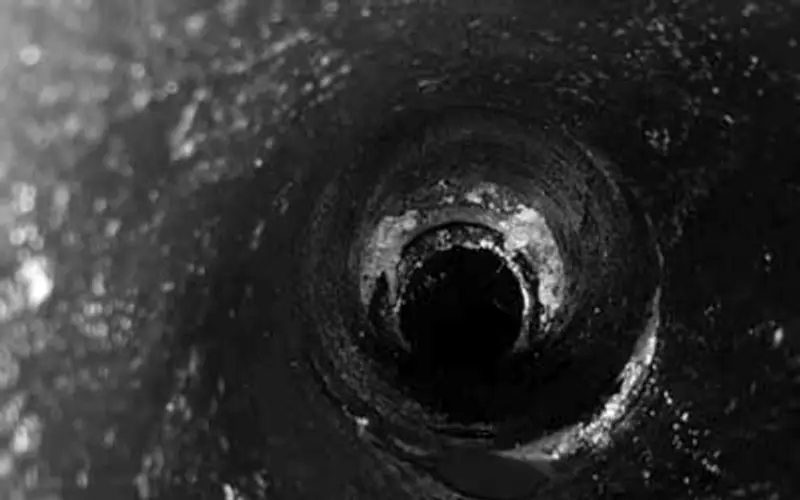

Abiertos las 24 h · 365 días al año
Desatascos Nago
Desatascos, arquetas, red de saneamiento y mantenimiento general. Para particulares, comunidades y empresas, en Irun y toda Euskadi.
4,9 ★ · 58 opiniones en GoogleCuéntanos qué pasa
¿Qué se ha atascado?



Desatasco en casa
Llámanos a cualquier hora: vamos, localizamos el atasco y lo solucionamos lo antes posible, con maquinaria moderna para causar el mínimo daño.
Llamar ahoraServicios
Del fregadero
al alcantarillado
- DesatascosFregaderos, duchas, inodoros y bajantes.
- ArquetasLocalización, apertura y mantenimiento, también las ocultas.
- Red de saneamientoRevisión y reparación de la red.
- TuberíasLimpieza y reparación sin romper de más.
- Vídeo inspecciónCámara dentro de la tubería para ver el problema.
- Fosas sépticasVaciado y limpieza.
- Vaciados y limpiezasLimpieza de redes y vaciado de depósitos.
- ComunidadesMantenimiento de comunidades para su tranquilidad.
- Obra civilZanjas y obra cuando no hay otra solución.
- Tubería sin zanjaRehabilitación sin abrir el suelo.
- 24 h, 365 díasUrgencias a cualquier hora del año.
- Informe por escritoAl terminar, te dejamos todo por escrito.
Así trabajamos
Tres pasos y
el agua corre
Llamas
Aquí estamos, a su disposición. Cuéntanos qué es lo que necesitas.
A trabajar
Nos encargamos: utilizamos todos nuestros recursos para detectar y solucionar el problema.
Acabamos
Fase final: solucionamos su problema lo antes posible y le dejamos un informe por escrito.
Sin abrir zanjas
Ver el problema,
no adivinarlo
Con cámara dentro de la tubería localizamos el fallo, y con la rehabilitación sin zanja ahorramos grandes obras. Y ofrecemos 10 años de garantía en la reparación.
- Vídeo inspección de tuberías
- Rehabilitación de tubería sin zanja
- Localización de arquetas ocultas
- Informe por escrito al terminar
58 opiniones en Google. Léelas en Google Maps